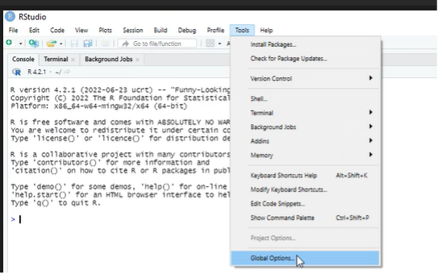
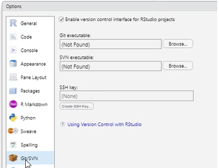
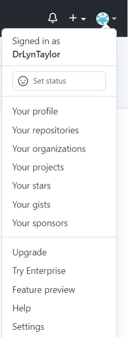
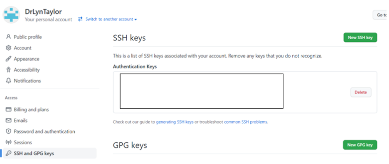
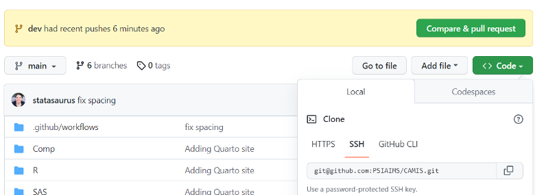
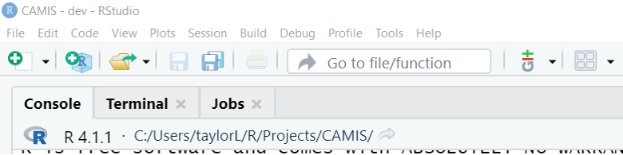
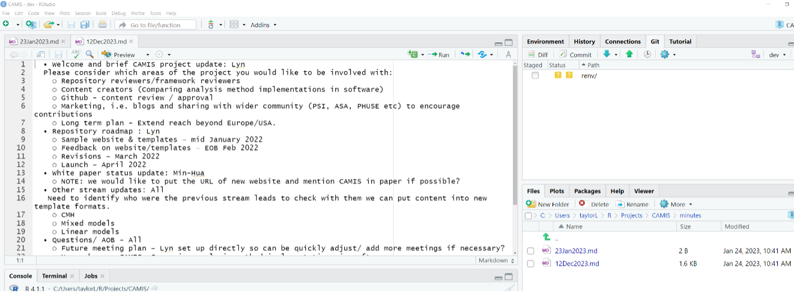
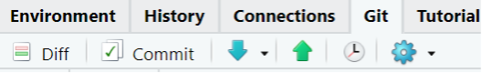
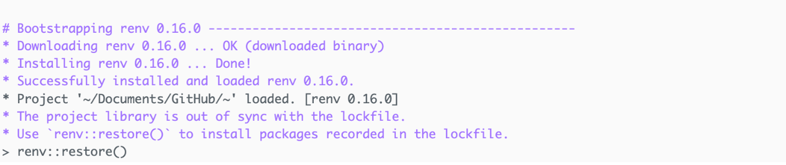

Contribution Guide: connect RStudio with GitHub
Do you have RStudio locally? If so, this should be straight forward. If on a remote server it may be more complex!
Have you connected your RStudio to GitHub? If not, complete Steps 1 to 3 below.
NOTE: You will need the following to proceed:
- R Studio
- Git software and
- a GitHub account
Step 1: Ensure that your RStudio has a SSH Key
Go to: Tools – Global Options – Git/SVN.

Click to Create SSH Key - This allows communication between Github & R.

Where is asks if you want to add a password, you do not need any password adding.
Click to View Public Key & Copy it to the clipboard.
Step 2: Add the R Studio SSH key to your github account.
NOTE: you may need to come off your Company VPN in order for the connection to be accepted
Log into your GitHub account.
If you don’t know your github ID, then you could check to see if you contributed to the CSRMLW project and find it from there, then reset your account. Otherwise, set up a new github account. https://github.com/phuse-org/CSRMLW
Once logged in, Within Github - go to settings (the blue widget below)

Go to the SSH and GPG keys tab.

Select “New SSH Key”
Give it a title (Company X account) and “Add SSH Key”.
Paste in the SSH Code that you copied in step 1 and click “Add SSH Key”.
Step 3: Tell R Studio the project you want to work on: the CAMIS github repo
Navigate to the Git hub repo you want to work in: https://github.com/PSIAIMS/CAMIS
Click on the Green “Code” button and select the tab: Local – SSH as shown below Copy the SSH key.

Go into R Studio. Select: File New Project - Version Control - Git : In the repository URL paste the SSH key from Github. Click Ok.
This will set up the link between Github & your R studio.
The console will show you where files will be stored locally, before/after doing pull requests to the repo

Now you can create new RMD files - edit them locally and save them back to github using the Git tab as shown below (on the right Environment, History, Connections, Git, Tutorial)

When you save a file, It will appear in the GIT tab.
Commit - will push it back to the repo.
Make sure you pull down (Blue down arrow) before starting changes so you are editing the latest version of things from the repo. After you commit, click the Green up arrow to do a pull request back to the repo.
 If you have problems with the new project and what packages it has available. It is a good idea go into: Tools - Project Options - Environments - and select “Use RENV with this project”. This then saves the packages more locally & they should be there when you go back in.
If you get the following message, then run “renv::restore()” in the console.
